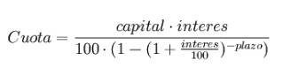

Las cuotas o pagos periódicos son pagos iguales o variables que se realizan en intervalos de tiempo definidos para cancelar una deuda o financiar una compra. Estos pagos incluyen parte del capital y los intereses generados.
Las cuotas pueden ser: Mensuales , Trimestrales , Semestrales o Anuales.
